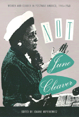

<body bgcolor="#FFFFFF" text="#000000" link="#0000FF" vlink="#CC0000" alink="#CC0000"><center><hr width="350" size="1" align="center" noshade>A denouncement of the housewife stereotype imposed on post-World War II women<hr width="350" size="1" align="center" noshade><p><a href="https://cdcshoppingcart.uchicago.edu/Cart/ChicagoBook.aspx?ISBN=9781566391702&&PRESS=temple" target="_top">Buy this book!</a> | <a href="https://cdcshoppingcart.uchicago.edu/Cart/Cart.aspx?PRESS=temple" target="_top">View Cart</a> | <a href="https://cdcshoppingcart.uchicago.edu/Cart/Cart.aspx?PRESS=temple" target="_top">Check Out</a></p><p></p></center><!--none//--><h1>Not June Cleaver</h1>
<H2>Women and Gender in Postwar America, 1945-1960</H2>
<h3>edited by Joanne Meyerowitz</h3>
<P>cloth 1-56639-170-9 $69.95, May 94, <FONT COLOR=#990033>Out of Print</FONT>
<br>paper 1-56639-171-7 $35.95, May 94, <FONT COLOR=#990033>Available</FONT>
<br>Electronic Book 1-43990-881-8 $34.95 <FONT COLOR=#990033>Out of Print</FONT>
<BR> 424 pp
6x9
4&nbsp;tables 12&nbsp;halftones
</P><BLOCKQUOTE><I>"</I>Not June Cleaver<I> reconsiders the roles of women as mothers, workers, activists, unionists and pacifists and read together these fine essays signify a systematic devaluation of women that eventually manifested itself in the coming of age of the women's movement."</I>
<br>&#151<b><I>Publishers Weekly</I></b><I></I></BLOCKQUOTE>
<p>In the popular stereotype of post-World War II America, women abandoned their wartime jobs and contentedly retreated to the home. These mythical women were like the 1950s TV character June Cleaver, white, middle-class, suburban housewives. <I>Not June Cleaver</I> unveils the diversity of postwar women, showing how far women departed form this one-dimensional image.
<p>This collection of fifteen revisionist essays charts new directions in American women's history and provides connections to scholarship that, until recently, has focused primarily on the years before 1945 and after 1960. The contributors explore the work and activism of postwar American women and also point to the contradictions and ambiguities in postwar concepts of gender.
<p>Including examinations of such aspects of postwar women's history as the arrival of Chinese women immigrants in New York City; women's changing presence in the labor force and in union organization; and the precarious lives of women abortionists, lesbians, and single mothers, the authors effectively demonstrate how postwar women's identities were not only an expression of their gender but also of their class, race, ethnicity, sexual orientation, religion, occupation, and politics.
<BR>&nbsp;<h2>Excerpt</h2><P>Excerpt available at <a href="http://www.temple.edu/tempress">www.temple.edu/tempress</a></p>
<BR>&nbsp;<h2>Reviews</h2>
<p><I>"An astonishingly successful effort to rewrite the history of American women in the postwar era... [that] challenges well-established interpretations of postwar gender ideology, shows how gender politics were integral to Cold War politics, and complicates and deepens our understanding of postwar women...&#151working and middle-class, Chicana, white, black, and Asian...and essential text for historians of the Cold War and postwar gender politics"</I>
<br>&#151<b>George Chauncey</b>, University of Chicago
<BR>&nbsp;<h2>Contents</h2><P>
<p>1. Introduction: Women and Gender in the Postwar United States &#150 Joanne Meyerowitz
<p><b>Part I: Women and Wage Labor</b>
<br>2. When Women Arrived: The Transformation of New York's Chinatown &#150 Xiaolan Bao
<br>3. An "Obligation to Participate": Married Nurses' Labor Force Participation in the 1950s &#150 Susan Rimby Leighow
<br>4. Recapturing Working-Class Feminism: Union Women in the Postwar Era &#150 Dorothy Sue Cobble
<br>5. Women's Employment and the Domestic Ideal in the Early Cold War Years &#150 Susan M. Hartmann
<p><b>Part II: Activist Women and Their Organizations</b>
<br>6. Gender and Post-World War II Progressive Politics: A Bridge to Social Activism of the 1960s &#150 Susan Lynn
<br>7. Mayhem and Moderation: Women Peace Activists During the McCarthy Era, 1945-1955 &#150 Harriet Hyman Alonso
<br>8. "Is Family Devotion Now Subversive?": Familialism Against McCarthyism &#150 Deborah A. Gerson
<br>9. Gender and Civic Activism in Mexican American Barrios in California: The Community Service Organization, 1947-1962 &#150 Margaret Rose
<br>10. "Our Skirts Gave Them Courage!": The Civil Defense Protest Movement in New York City, 1955-1961 &#150 Dee Garrison
<p><b>Part III: Constructions of Womanhood</b>
<br>11. Beyond the Feminine Mystique: A Reassessment of Postwar Mass Culture, 1946-1958 &#150 Joanne Meyerowitz
<br>12. "I Wanted the Whole World to See": Race, Gender, and Constructions of Motherhood in the Death of Emmett Till &#150 Ruth Feldstein
<br>13. White Neurosis, Black Pathology: Constructing Out-of-Wedlock Pregnancy in the Wartime and Postwar United States &#150 Regina G. Kunzel
<p><b>Part IV: Sexual Outlaws and Cultural Rebels</b>
<br>14. Extreme Danger: Women Abortionists and Their Clients Before <I>Roe v. Wade</I> &#150 Rickie Solinger
<br>15. The Sexualized Woman: The Lesbian, the Prostitute, and the Containment of Female Sexuality in Postwar America &#150 Donna Penn
<br>16. The "Other" Fifties: Beats and Bad Girls &#150 Wini Breines
<br>About the Contributors
</P><BR>&nbsp;<H2>About the Author(s)</H2>
<table><tr><td valign="top"><img src="/tempress/authors/994_au.gif" height="90" width="75"></td><td width="100%" valign="middle"><p><b>Joanne Meyerowitz</b> is Associate Professor of History at the University of Cincinnati and author of <I>Women Adrift: Independent Wage Earners in Chicago, 1880-1930</I>.</P></td></tr></table>
<P>Contributors: Harriet Hyman Alonso, Xiaolan Bao, Wini Breines, Dorothy Sue Cobble, Ruth Feldstein, Dee Garrison, Deborah A. Gerson, Susan M. Hartmann, Regina G. Kunzel, Susan Rimby Leighow, Susan Lynn, Donna Penn, Margaret Rose, Rickie Solinger, and the editor.</P>
<BR><H2>Subject Categories</H2>
<p><A HREF="/tempress/women.html" TARGET="_top">Women's Studies</a>
<BR><A HREF="/tempress/american.html" TARGET="_top">American Studies</a>
</p>
<BR><h2 class="inpageheading">In the series</H2>
<P><I><a href="http://www.temple.edu/tempress/critical.html" onMouseOver="window.status='Click for other books in this series!'; return true;" onMouseOut="window.status=''; return true;" target="_top">Critical Perspectives on the Past</a></i>, edited by <a href="http://www.temple.edu/tempress/authors/benson_memoriam.html" target="_top">Susan Porter Benson</a>, Stephen Brier, and Roy Rosenzweig.
</p><p><i>Critical Perspectives on the Past</i>, edited by Susan Porter Benson, Stephen Brier, and Roy Rosenzweig, is concerned with the traditional and nontraditional ways in which historical ideas are formed. In its attentiveness to issues of race, class, and gender and to the role of human agency in shaping events, the series is as critical of traditional historical method as content. Emphasizing that history is itself an interpretation of material events, the series demonstrates that the historian's choices of subject, narrative technique, and documentation are politically as well as intellectually constructed.</p>
<p align="center"><a href="https://cdcshoppingcart.uchicago.edu/Cart/ChicagoBook.aspx?ISBN=9781566391702&&PRESS=temple" target="_top">Buy this book!</a> | <a href="https://cdcshoppingcart.uchicago.edu/Cart/Cart.aspx?PRESS=temple" target="_top">View Cart</a> | <a href="https://cdcshoppingcart.uchicago.edu/Cart/Cart.aspx?PRESS=temple" target="_top">Check Out</a></p><p><font face="Arial" size="1"><a href="copyright.html" onMouseOver="window.status='Web Copyright Policy';return true;" onMouseOut="window.status=''" title="Web Copyright Policy">&copy;</a> 2015 <a href="http://www.temple.edu" target="new" onMouseOver="window.status='Link to Temple University home page';return true;" onMouseOut="window.status=''" title="Link to Temple University home page">Temple University</a>. All Rights Reserved. http://www.temple.edu/tempress/titles/994_reg.html</font></p>